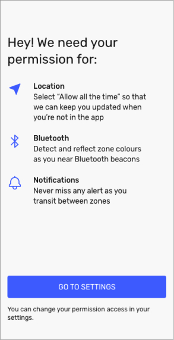
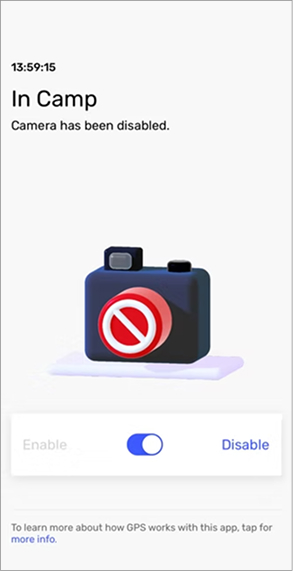
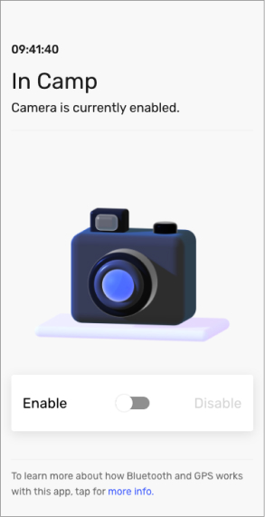
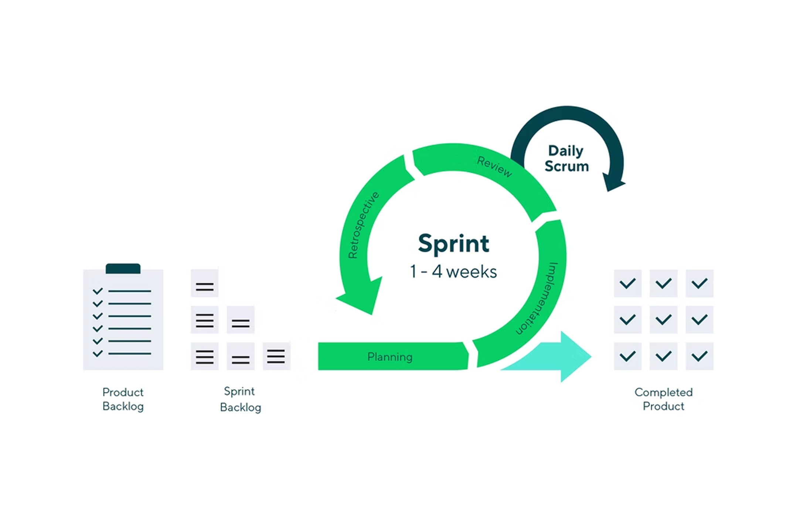

Mobile App · Product Design
Camera Compliance App
Helping users comply with security rules in restricted areas through an app that disables phone cameras and sends location-triggered reminders.

Overview
Certain areas in Singapore, such as military camps, are designated as red zones where smartphone cameras are prohibited to prevent security breaches. Users who keep their phone cameras may accidentally violate security rules if they forget to disable them before entering a red zone.
To give users the choice of keeping or physically removing their phone cameras, a Proof of Concept (PoC) mobile application was developed to disable cameras when required and ensure compliance with security requirements in restricted zones.
Challenge
Although users welcomed the option to keep their phone cameras by using the app, initial PoC trials revealed two key issues affecting the app's usability and reliability:
1. Slow response time: The as-is journey revealed that users had to disable their phone cameras through the app before entering restricted zones and show the disabled status to security personnel before entering the red zone.
However, the app's slow response delayed security checks, with users waiting up to 5 minutes for the camera to be disabled. This caused long queues and increased user anxiety and frustration. Some users even considered physically removing their cameras, undermining the app's intended purpose.
2. Unclear status indicators: The app's original design used a simple toggle button to disable the camera, but its visual indicators did not clearly confirm whether the action was successful.
As a result, users often reopened their native camera apps to verify the status, adding unnecessary steps and reducing confidence in the app.
HMW
Recognising opportunities to improve the existing PoC, we focused on two key challenges and translated them into the following How Might We (HMW) statements:
HMW #1 — Improve responsiveness: How might we reduce loading delays to create a smoother user experience at security checkpoints?
HMW #2 — Improve clarity: How might we provide clear and intuitive visual feedback to assure users that their cameras are successfully disabled in red zones?
Solution
With the HMW statements defined, Version 2.0 translated key user pain points into targeted design improvements to make camera disabling more reliable and intuitive in red zones.
HMW #1: How can we improve the user experience when dealing with slow loading times in security-sensitive areas?
To reduce delays and uncertainty during security checks, we introduced three key improvements:
- Beacon Technology Integration: Strategically placed beacons send reminder notifications to users' phones, prompting them to disable their cameras as they approach a restricted zone.
- Optimized Loading Time: The app's loading time was reduced from more than 5 minutes to 3-5 seconds, minimizing delays.
- Clear Status Feedback: Spinning loaders with explanatory text inform users that their cameras are being disabled, providing clarity and reducing uncertainty.

HMW #2: How might we create a more intuitive and clear visual indication to users when their camera is disabled in a red zone?
To reinforce user confidence, we introduced three layers of visual confirmation:
- Visual Confirmation: The camera image provides the first layer of assurance, indicating that the camera has been successfully disabled.
- Toggle Indicator: The toggle button provides a second layer of assurance by displaying the camera's current state (e.g., "Disable").
- Clear Description: A written message provides a third layer of assurance by explicitly stating "Camera has been disabled" to confirm the action.


Approach
Our team followed the Agile Scrum Framework and here are the scrum activities that we did:
- Sprint Planning: Our team schedules this recurring meeting to decide on the work to be completed in the upcoming sprint, setting a clear goal and selecting tasks from the backlog to focus on.
- Daily Stand-Up (DSU): A brief daily meeting where the team discusses their progress, identifies any obstacles, and outlines their plans for the day.
- Sprint Review: At the end of the sprint, our team showcases the work they've completed to stakeholders like the product owner, gathers feedback, and discusses the overall progress of the project.
- Sprint Retrospective: After the sprint, our team reflects on what went well, what challenges they faced, and how they can improve their processes for the next sprint. Our stakeholders also joined in on this session!
- Backlog Refinement (Grooming): Our team regularly reviews and updates the backlog, ensuring that tasks are clearly defined, properly prioritized, and ready for future sprints.
- Sprint: A set time period during which the team works on selected tasks to achieve the sprint goal. Our team decided that 1 sprint = 2 weeks.
In summary, these Scrum activities help support effective communication, collaboration, and continuous improvement throughout the Scrum process.

Outcome
The improved app addressed key usability and reliability issues and was successfully piloted on 22 August 2022 in selected camps with restricted zones.
-
01 · Optimised Performance
From 5 minutes to 3–5 seconds
The optimised camera-disabling process significantly reduced waiting time during security checks.
5 min3–5 sec
Improved loading time
-
02 · Real-world deployment
Successfully piloted
Version 2.0's improvements supported deployment in selected camps with restricted zones.
22 Aug
2022 · Pilot launch
-
03 · Future potential
Designed for wider adoption
Following the pilot, plans were in place to expand the app to more camps and restricted zones.
More camps
Planned expansion
Reflection
Working as the sole designer taught me to seek different perspectives and collaborate closely with developers to create more practical design solutions. I also learned the value of guerrilla testing in validating ideas quickly.
In future projects, I would involve developers during the early design stages and test ideas sooner to identify potential issues and refine solutions more effectively.
Next project